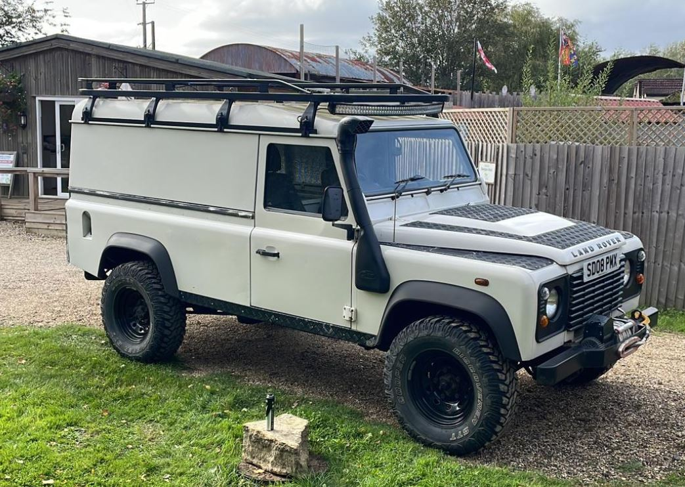
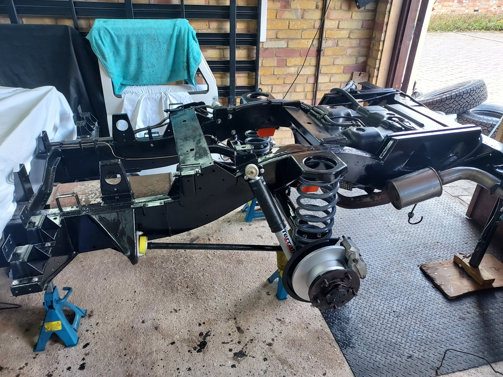
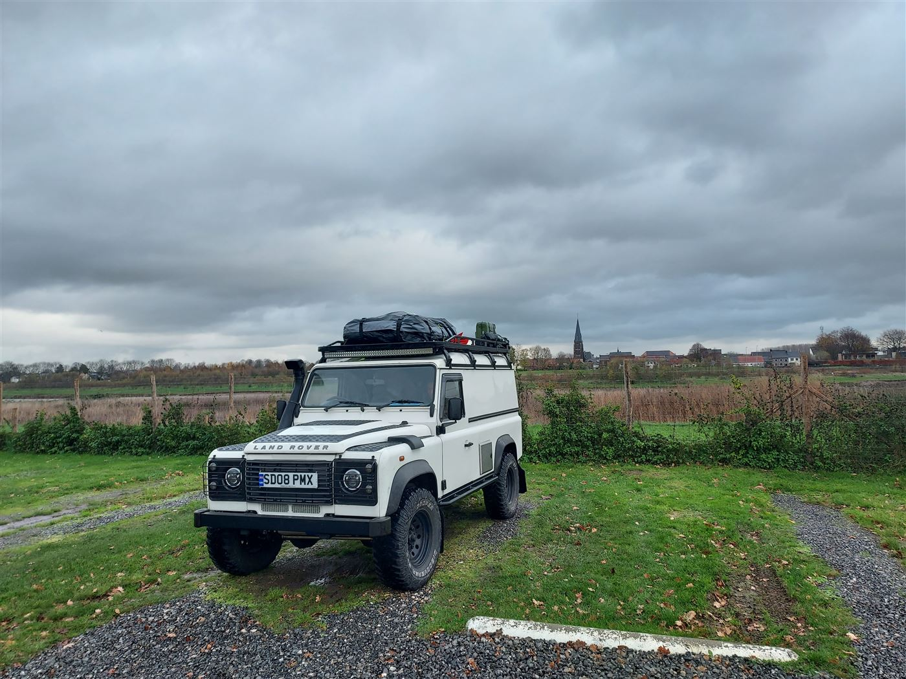

The build
In September 2023 I bought a 2008 Land Rover Defender 110. It was running, taxed, and tested, but underneath, it was carrying a decade and a half of neglect. Worn joints, leaking seals, surface rust creeping across the chassis, and advisory after advisory on its MOT history that the previous owners had lived with rather than fixed.
The plan from day one was not a cosmetic refresh. It was a proper rebuild, every component on the truck stripped, assessed, and either refurbished to spec or replaced outright. The drivetrain (engine, gearbox, and transfer box) was mechanically sound and left alone. Everything else was fair game.
Two years. Every weekend. Garage floor, no lift, every bolt fought for by hand.

The approach
Without a lift and working in a standard single garage, doing the whole truck at once wasn't an option. The solution was to work in halves, front first, then rear. Each half was fully stripped, treated, rebuilt, and reassembled before moving on.
This meant that once the front was done, I had to drive the truck out of the garage, turn it around, and pull it back in the other way to access the rear, which, on a half-finished Defender with no suspension on the back, was exactly as entertaining as it sounds.
All chassis metalwork was treated with POR-15, a professional-grade rust encapsulator and paint system that bonds chemically to bare metal. Anywhere the chassis or underbody components showed rust, they were ground back, treated, and painted before anything went back on.

Front end
The front half of the truck came apart completely. The front axle was removed, stripped, and rebuilt with a full new wheel bearing and stub axle kit on both sides. The prop shafts were inspected and refurbished. New heavy-duty suspension went on throughout, all four corners of the front end replaced with quality parts rather than pattern substitutes.
The brakes were replaced in their entirety, discs, pads, calipers, and every inch of brake pipe. The lines were bent to length by hand in the garage, which is one of those jobs that sounds straightforward until you're three hours in and still fighting a union fitting. Every junction was pressure-tested before anything was signed off.
- Front axle stripped and fully rebuilt
- Full wheel bearing and stub axle kit both sides
- Prop shafts inspected and refurbished
- All-new front suspension
- Complete brake replacement, discs, pads, calipers, all new pipe bent by hand
- New radiator fitted
- New intercooler fitted
- Chassis cleaned, rust treated, and painted with POR-15
The front bulkhead, the structural panel that sits behind the engine bay, had rust issues that needed proper attention. Rather than filling and painting over it, it was patch welded to restore the integrity of the metalwork, then treated and repainted. It's not a glamorous job but it's the right one.
Once the front was back together the whole end of the truck was reassembled, mechanically complete, solid, and ready for the road. The roof was left off at this stage to allow the truck to be repositioned for the rear work.


Rear end
With the front done, the truck went back out of the garage, got turned around, and came back in the other way. The rear half then got the same treatment, everything off, everything inspected, everything refurbished or replaced before it went back on.
The rear axle was stripped and rebuilt. Rear brakes replaced in full, same approach as the front, all-new hardware and hand-bent pipe throughout. New rear suspension fitted across the board. The chassis under the rear was rust-treated and POR-15'd in the same way as the front, so the whole underside of the truck now has consistent protection.
- Rear axle stripped and rebuilt
- Complete rear brake replacement, new discs, pads, calipers, all pipe
- All-new rear suspension
- Chassis treated and repainted with POR-15
Once the rear was back together, the truck was complete. Two years of weekends, an enormous parts bill, and more skinned knuckles than I care to count, but it was done.

The result
The Defender went for its MOT in October 2025. It passed with zero advisories. The mechanics had a look around underneath and came back genuinely complimentary about the quality of the work, which, after two years on a cold garage floor with no lift and a parts manual for company, meant more than I probably let on.
A vehicle that came in with advisory after advisory on its history went out clean. Everything that should work, works. Everything that was tired has been replaced. It's not a new truck, it's a 17-year-old workhorse, but it's been rebuilt properly, and it'll go another 17 years if it's treated right.
The week after it passed, we loaded it up and drove it to France. By the end of November it had covered twelve cities across six countries. It didn't miss a beat.

MOT History
Notes
- Clean pass, no advisories, no failures
- Inspecting mechanics complimented the quality of the rebuild
- First test post-restoration
Advisories (at purchase)
- Rear prop shaft UJ worn
- Front diff pinion seal leaking
- Shock absorbers slightly worn bush on both rear uppers
Thank you
A project this size doesn't happen alone, and I wouldn't have got through it without some people who gave up far more of their time than I had any right to ask for.
Dad, thank you for being there from the start. For every weekend in the cold, every problem solved by thinking it through together, and for never once suggesting I'd taken on too much. We also developed an impressive technique for dropping everything we tried to lift together, which we've agreed to call a system and never speak of again. You were there for the hard bits and I genuinely couldn't have done it without you.
Craig, for the expertise, the patience with every question, and for the afternoon you managed to pour the best part of a tin of paint straight down your own back. You stayed remarkably calm about it. The jacket did not survive.
Gordon, for being the only person on this project capable of moving the bulkhead by himself, which he did with the energy of a man who had just consumed a frankly architectural amount of sausages and bacon and apparently had plenty left in the tank. The man is built different.
Ben, Amy, and Oscar, for every weekend of muffled impact noises from the garage, every rolling socket, every moment something fell off something else at volume. Not a single complaint. Oscar in particular showed remarkable restraint.
There was blood, sweat, tears, and at one point a small fire. I loved every minute of it.